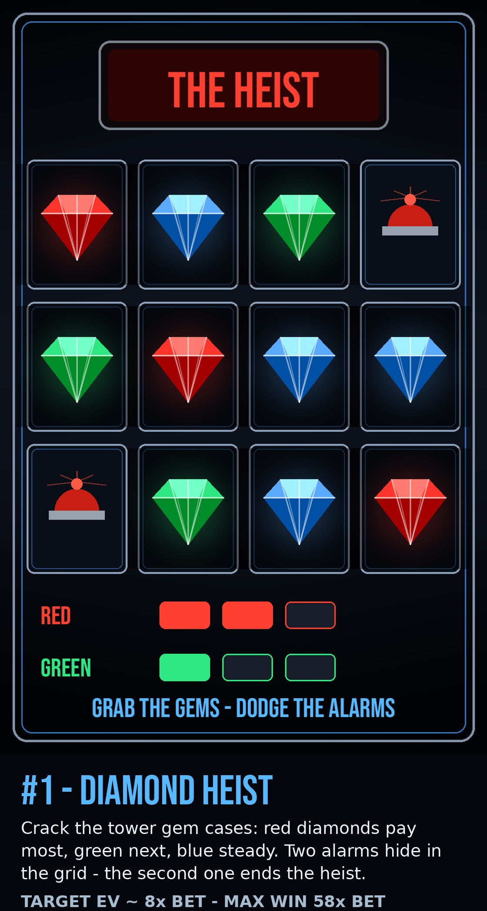
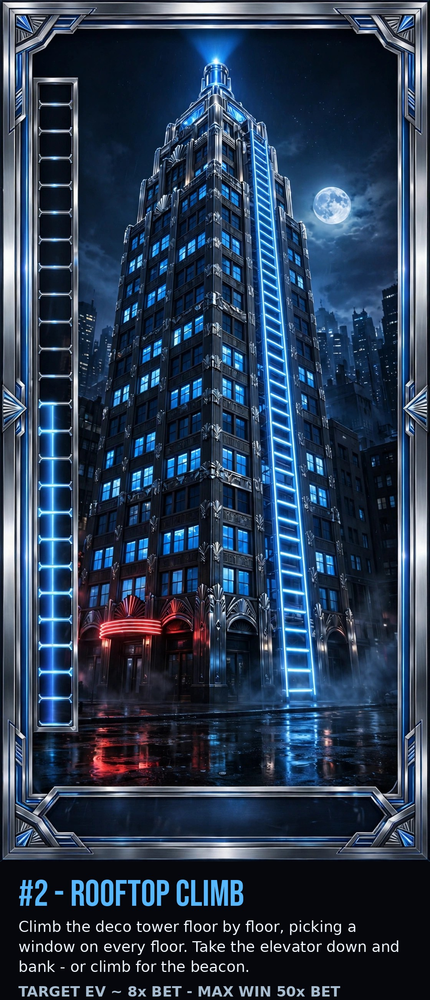
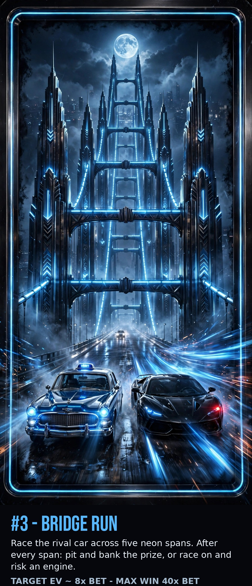
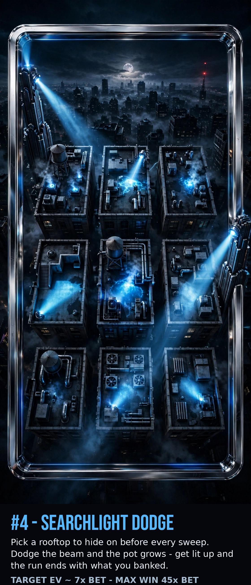
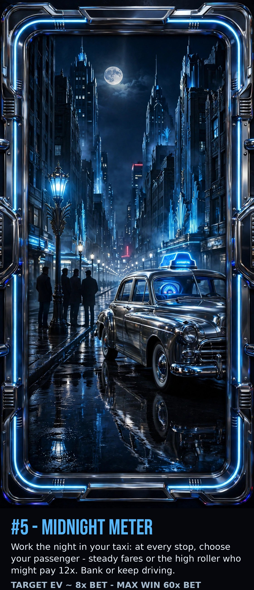

Skyline has one real bonus game — the Dice Roll — plus free spins. Its other "bonus" is a fake: land five of a kind and the machine plays the big BONUS celebration… and then nothing. No game, no pick, no prize of its own (the audit is in writing — that screen pays zero on its own). Here are five real games built for Skyline: the midnight city, its towers, its bridge, its taxis — and its new red and green diamonds. Pick one by number.

TRIGGER $$$ random bonus pool.
YOUR MOVES Twelve gem cases in the tower display: 3 RED diamonds (5× each), 3 GREEN (3× each), 4 BLUE (1× each) — and 2 hidden ALARMS. You get 7 picks. Every gem you grab is yours to keep, and each one lights its color meter.
HOW IT ENDS The first alarm costs you a pick; the second alarm ends the heist (you keep everything grabbed). Fill the RED meter — all 3 reds — for the SKYLINE CROWN, +20×. All 3 greens pays +10×.
THE FEEL Skyline's own diamond family as a game: red is the money, green is second, and the alarms keep your hands honest.
GEMS SUM TO 28× + CROWN 20× + GREEN SET 10× · TARGET EV ≈ 8× BET · MAX WIN 58× BET

TRIGGER $$$ random bonus pool.
YOUR MOVES Ten floors up the deco tower: 1×, 2×, 3×, 4×, 6×, 8×, 11×, 15×, 20×, 30×. On every floor you pick one of two windows — the lit one climbs. After any floor you can take the ELEVATOR DOWN and bank that floor's prize instead of climbing.
HOW IT ENDS Pick the dark window and the searchlight catches you — the climb ends, but floors 3 and 6 are LOCKED: reach one and its prize is guaranteed. Top out at the penthouse and the beacon pays +20× more.
THE FEEL A climb up the tower's face with a bank-or-climb decision on every single floor.
TOP FLOOR 30× + BEACON 20× · TARGET EV ≈ 8× BET · MAX WIN 50× BET

TRIGGER $$$ random bonus pool.
YOUR MOVES Your taxi against the rival car, five neon spans: 2×, 4×, 7×, 12×, 20×. Tap RACE to run a span — win it and the prize climbs. Between spans you choose: PIT and bank the prize, or RACE ON.
HOW IT ENDS Lose a span and you lose an engine — you have two. Spans 2 and 4 are LOCKED once crossed. Cross all five and the finish line pays +20× on top.
THE FEEL A street race in five heats, with a pit-or-push decision after every span.
FIFTH SPAN 20× + FINISH BONUS 20× · TARGET EV ≈ 8× BET · MAX WIN 40× BET

TRIGGER $$$ random bonus pool.
YOUR MOVES Nine rooftops, up to six searchlight sweeps. Before every sweep you pick the rooftop you'll hide on. Dodge the beam and the meter grows: 1×, 2×, 3×, 5×, 8×, 12×. Between sweeps you can BANK the meter and walk.
HOW IT ENDS The beam lands on your rooftop and the run is over — you keep whatever you already banked along the way. Survive all six sweeps for a +14× clean-getaway bonus.
THE FEEL Read the sweep, pick your roof, and decide how many sweeps your nerve holds for.
SIX DODGES SUM TO 31× + GETAWAY 14× · TARGET EV ≈ 7× BET · MAX WIN 45× BET

TRIGGER $$$ random bonus pool.
YOUR MOVES Five stops across the midnight city. At every stop, three passengers wait and you choose who rides: the REGULAR (a sure 2–4×), the COUPLE (3–6×), or the HIGH ROLLER (nothing… or 5–12×). After every fare: DROP OFF and bank it all, or KEEP DRIVING.
HOW IT ENDS The longer you drive, the heavier traffic gets — hit a JAM and the night ends; you keep your single biggest fare. Five stops, five passenger calls, all yours.
THE FEEL Working the night in the machine's own taxi — every stop is a read: steady money or the swing fare.
FIVE HIGH ROLLERS = 60× · TARGET EV ≈ 8× BET · MAX WIN 60× BET
Examples only — nothing is wired into the game yet. Pick a number and that game gets built into Midnight Skyline's bonus pool.
© 2026 J-Dawgs Industries